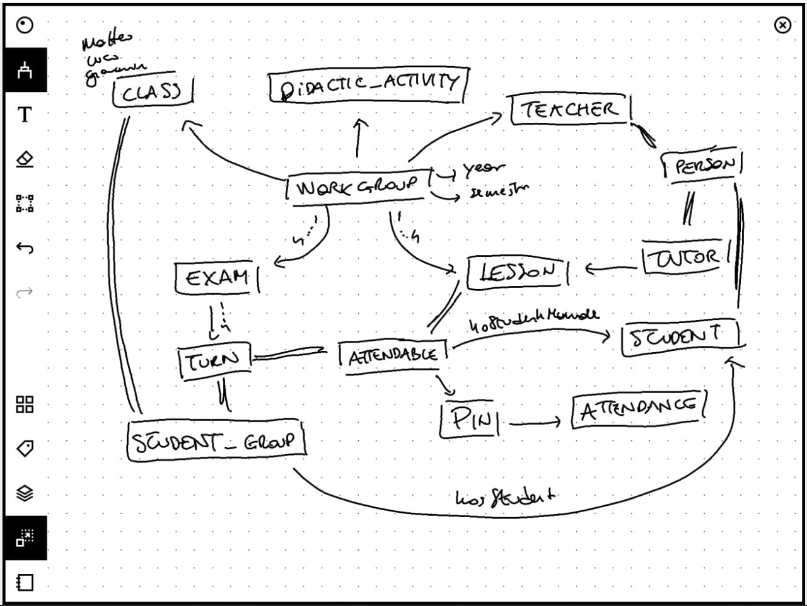

Attendance
Ontologia per la registrazione delle presenze in aula
Relazione elaborato Web Semantico
|
|
|
Sviluppo Ontologia
Classi
Di seguito viene riportato uno schema di massima della nostra ontologia:

Sopra: uno schema di massima della nostra ontologia
Vengono riportate le classi modellate in due classi più rilevanti e le altre (???).
Person
Questo sostantivo rappresenta una qualunque persona interagisca con un sistema scolastico. Nel nostro elaborato esso modella solamente poche di tutte le possibilità, nello specifico:
-
Teacher: chi tiene le lezioni
-
Tutor: chi aiuta a gestire uno specifico workgroup
-
Student: chi segue le lezioni
Workgroup
Rappresenta una Classe che partecipa in un determinato anno didattico e semestre ad una Attività Didattica.
Classe
Rappresenta un gruppo di studenti iscritti in un certo anno accademico.
Attività Didattica
Rappresenta un corso di studio insegnato nella scuola. Un esempio può essere Matematica o Economia.
Attendable
Rappresenta un concetto(???) sul quale può essere registrata una presenza.
Lesson
Rappresenta un quanto di tempo dove gli studenti seguono un professore. Eventualemnte, il professore può essere aiutato o sostituito da un tutor.
Exam
Rappresenta un quanto di tempo dove gli studenti, divisi in turni svolgono la propria prova.
Exam Turn
Rappresenta un quanto di tempo dove una parte di studenti iscritti ad un esame svolge la propria prova.
Pin
Rappresenta un codice a 6 cifre che le persone usano per registrare la loro presenza ad un Attendable.
Possiede una data di creazione (creation_date) da valorizzare quando viene generato il Pin che è usata per calcolare tramite la regola ... la data di scadenza dello stesso. Allo scoccare della scadenza non sarà più possibile registrare una presenza sul Pin.
Elenco delle proprietà ???
Attendance
Rappresenta una registrazione di una presenza. Essa quindi richiede un Pin associato ad un Attendable, cioè un impegno sul quale possa essere registrata una presenza.
Student Group
Rappresenta un gruppo di studenti. Questa classe è usata esclusivamente nell'ontologia come superclasse per conferire la proprietà hasStudent alle sue sottoclassi
Object Properties
Di seguito vengono specificate le principali Object Properties modellate. Vengono elencate ma non esaustivamente spiegate le properties usate dalle ontologie importate.
hasStudent vs hasStudentManual
La prima proprietà esprime un elenco di studenti che appartengono ad un determinato Student Group a priori, mentre la seconda un elenco di studenti aggiunti a posteriori ad un Attendable.
Regole Semantiche
Interrogazioni
Tramite questa sintassi esprimiamo alcune delle più comuni query che potrebbero essere svolte sulla nostra ontologia.
Query:
Ultimo pin valido per un determinato attendable
Selezioniamo l'ultimo pin valido per un attendable. Questa interrogazione viene usata quando si vuole presentare il pin sul quale gli studenti possono registrare la loro presenza.
In questo caso l'Attendable da usare è già noto, basta ordinare per data di creazione decresente i Pin che sono di un certo Attendable e prendere solo il primo.
SELECT ?pin WHERE {
?attendable att:hasPin ?pin .
?pin att:creation-date ?creationDate .
?pin att:expiration-date ?expirationDate .
BIND( now() AS ?currentDateTime ) # Get current date time
FILTER (?attendable = att:LES_WS_2023_05_21) # This is the parameter
FILTER (?expirationDate >= ?currentDateTime)
}
ORDER BY DESC(?creationDate) LIMIT 1
Tutti i workgroup attivi per un determinato utente
Selezioniamo tutti i workgroup attivi per un utente per capire quali lezioni dovrà seguire o quali esami sostenere.
# Retrieve all workgroup for a student.
SELECT ?workgroup ?da ?teacher ?term WHERE {
?student att:isStudentOf ?class .
?class att:isClassOf ?workgroup .
?workgroup att:hasDidacticActivity ?da ;
att:hasTeacher ?teacher ;
att:wrk-term ?term .
FILTER (?student = att:STU_00001_MarioRossi)
}
ORDER BY ?term
Estrai uno studente presente casualmente
Seleziono uno studente preso a caso tra i presenti a lezione per verificare se realmente sia presente o è stato registrato da qualcun altro in modo malizioso.
In questo caso devo recuperare da tutti pin usati per la lezione tutte le presenze di un qualsiasi tipo valido e ne leggo soltanto una, la prima tra tutte quelle recuperate riordinate a caso.
# Retrieve all attendance from an attendable.
SELECT ?attendance WHERE {
?attendable att:hasPin ?pin .
?pin att:hasAttendance ?attendance .
?attendance rdf:type att:AttendanceValid .
FILTER (?attendable = att:LES_WS_2023_05_22) # This is the parameter
}
# Then order them randomly and take the first one.
ORDER BY RAND() LIMIT 1
Studenti che possono sostenere l'esame (presenze > di tot %)
# Students having a presence frequency at DA_WebSemantico higher (or equal) to 75%
SELECT ?student ?percentage WHERE {
{
SELECT ?student (count(?attendance) AS ?tot_freq) WHERE {
?wrk att:hasClass ?class .
?class att:hasStudent ?student .
OPTIONAL {
?wrk att:hasLesson ?lesson .
?lesson att:hasPin ?pin .
?pin att:hasAttendance ?attendance .
?attendance att:hasAttendant ?student .
{ ?attendance rdf:type att:AttendanceValid . }
UNION
{ ?attendance rdfs:subClassOf att:AttendanceValid . }
?attendance att:hasAttendant att:STU_00001_MarioRossi .
}
FILTER (?wrk = att:WRK_CL_001_DA_WebSemantico_2023)
}
GROUP BY ?student
}
{
SELECT (count(?lesson) AS ?tot) WHERE {
?wrk att:hasLesson ?lesson .
FILTER (?wrk = att:WRK_CL_001_DA_WebSemantico_2023)
}
}
FILTER (?percentage > 75)
}
Registro delle presenze
# Exam turn register
SELECT ?student ?attendance WHERE {
?exam att:hasTurn ?turn .
?turn att:hasStudent ?student .
OPTIONAL {
?turn att:hasPin ?pin .
?pin att:hasAttendance ?attendance .
?attendance att:hasAttendant ?student .
{ ?attendance rdf:type att:AttendanceValid . }
UNION
{ ?attendance rdfs:subClassOf att:AttendanceValid . }
}
FILTER (?exam = att:EX_WS_2023_06_26)
}
ORDER BY ?student